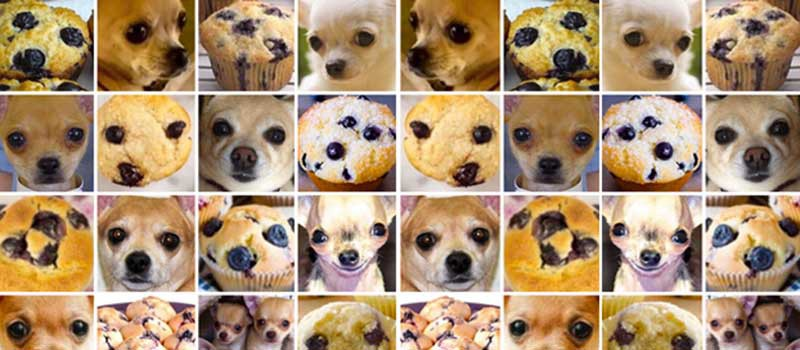

flowchart LR
A["üì• Dataset limpio (Boston)"] --> B["üìä Modelo base\nRegresi√≥n Lineal"]
B --> C{"üîç ¿Problemas?"}
C -- Sobreajuste / multicolinealidad --> D["üß∞ Ridge (L2)"]
C -- Muchas variables irrelevantes --> E["üßπ Lasso (L1)"]
D & E --> F["üß™ Validaci√≥n Cruzada"]
F --> G["üìà Comparar\nR¬≤ y RMSE"]
G --> H{"üéØ ¿Buen desempe√±o?"}
H -- Sí --> I["✅ Seleccionar modelo final"]
H -- No --> J["‚öôÔ∏è Ajustar hiperparámetros\nüîÑ Repetir"]
üìä Regresi√≥n Lineal y Regularizaci√≥n con Ridge y Lasso
üîç Un análisis con el dataset üèòÔ∏è Boston Housing
ü뮂Äçüè´ Jorge Iván Romero Gelvez
üèõÔ∏è Universidad Jorge Tadeo Lozano
2025-01-01
üí° ¿Qu√© significa la frase?
“Un buen modelo no solo ajusta bien los datos, sino que también generaliza.”
üîß Ajustar bien los datos
- üìâ El modelo aprende patrones de los datos de entrenamiento
- ✅ Tiene bajo error en el conjunto de entrenamiento
- ❗ Pero… puede memorizar incluso el ruido
- ⚠️ Riesgo de sobreajuste (overfitting)
Underfitting
Entreno al modelo con 1 sola raza de perro
- Muestra nueva: ¿Es perro?

- ❌ NO lo reconoce
- üîé La máquina falla en generalizar porque no ha visto suficientes ejemplos.
La máquina fallará en reconocer al perro por falta de suficientes muestras. No puede generalizar el conocimiento.
Overfitting
Entreno al modelo con 10 razas de perro color marrón
- Muestra nueva: ¿Es perro?

- ❌ NO lo reconoce
- ⚠️ El modelo está demasiado ajustado a los datos de entrenamiento.
La máquina fallará en reconocer un perro nuevo porque no tiene estrictamente los mismos valores de las muestras de entrenamiento.
üåç Generalizar los datos
- ü߆ El modelo funciona bien con datos nuevos
- üî¨ Puede predecir correctamente en el mundo real
- üìä Tiene buen rendimiento en el conjunto de prueba
- üéØ Es el verdadero objetivo del aprendizaje automático
üÜö Comparaci√≥n: Ajustar vs. Generalizar
| üîß Ajustar bien | üåç Generalizar bien | |
|---|---|---|
| üéØ Objetivo inicial | Minimizar error en entrenamiento | Predecir bien datos nuevos |
| ⚠️ Riesgo | Sobreajuste (memoriza) | Subajuste si es demasiado simple |
| üß∞ Herramientas | Modelos complejos | Regularizaci√≥n y validaci√≥n cruzada |
üõ†Ô∏è ¿C√≥mo logramos un buen equilibrio?
- ✅ Usando validación cruzada
- ⚖️ Aplicando Ridge y Lasso para controlar la complejidad
- üß™ Comparando resultados en entrenamiento y prueba
- üéì El arte del aprendizaje automático es encontrar el punto justo entre sesgo y varianza.

üìå RETOMANDO
- üìö Modelo base: punto de partida
- üß∞ Ridge: reduce varianza, estabiliza coeficientes
- üßπ Lasso: elimina variables irrelevantes
- üîÑ Validaci√≥n cruzada: asegura buen desempe√±o fuera de muestra
- üéØ Objetivo: lograr un modelo que generalice bien
- üí° El mejor modelo no es el más complejo, sino el que predice con equilibrio y claridad.
üÜö Comparaci√≥n de T√©cnicas
| Técnica | Problema que aborda | Cómo lo resuelve | Ventajas | Limitaciones |
|---|---|---|---|---|
| Regresión Ridge | - Multicolinealidad - Sobreajuste |
Penalización L2 que reduce el tamaño de los coeficientes grandes | - Reduce varianza - Mantiene todas las variables - Buena generalización |
- No elimina variables irrelevantes |
| Regresión Lasso | - Multicolinealidad - Sobreajuste - Alta dimensionalidad |
Penalización L1 que puede reducir coeficientes a cero (selección de variables) | - Selección automática de variables - Modelos más interpretables |
- Puede eliminar variables importantes si están correlacionadas |
| Validación cruzada | - Sobreajuste - Mala generalización del modelo |
Divide los datos en subconjuntos para evaluar múltiples veces el modelo | - Estima rendimiento real - Ayuda a elegir hiperparámetros óptimos |
- Mayor costo computacional - Sensible a la forma de dividir los datos |
1Ô∏è‚É£ Descripci√≥n del Dataset üèòÔ∏è
El conjunto de datos Boston Housing contiene información sobre barrios de Boston, recopilada por el U.S. Census.
- Observaciones: 506
- Variables independientes: 13 características socioeconómicas y urbanas
- Variable dependiente:
MEDV(Valor medio de vivienda ocupada por sus dueños, en miles de dólares)
2Ô∏è‚É£ Descripci√≥n del Dataset üèòÔ∏è
| Variable | Descripción |
|---|---|
| üïµÔ∏è‚Äç‚ôÇÔ∏è CRIM | Tasa de criminalidad per cápita por ciudad |
| üè° ZN | Proporci√≥n de terrenos residenciales (>25,000 pies¬≤) |
| üè≠ INDUS | Proporci√≥n de tierra para negocios no minoristas |
| üåä CHAS | Frontera con r√≠o Charles (1: s√≠, 0: no) |
| üß™ NOX | Concentraci√≥n de √≥xidos n√≠tricos (contaminaci√≥n del aire) |
| üõèÔ∏è RM | Número promedio de habitaciones por vivienda |
| üèöÔ∏è AGE | % de unidades construidas antes de 1940 |
| üìç DIS | Distancia a cinco centros de empleo |
| üõ£Ô∏è RAD | √çndice de accesibilidad a autopistas radiales |
| üí∏ TAX | Tasa de impuesto a la propiedad |
| ü뮂Äçüè´ PTRATIO | Relaci√≥n alumno-profesor en cada barrio |
| üë• B | Proporci√≥n poblacional afrodescendiente (cálculo especial) |
| üìâ LSTAT | % de poblaci√≥n con bajo estatus socioecon√≥mico |
| üí∞ MEDV | Valor medio de la vivienda (en miles de d√≥lares) |
üìö Librer√≠as necesarias
A continuación cargamos las librerías básicas para análisis de datos (pandas, numpy), creación y evaluación del modelo de regresión (scikit-learn).
üì• Carga del Dataset
Cargamos el dataset que contiene información socioeconómica sobre viviendas.
import pandas as pd
import numpy as np
# Cargar los datos desde la URL
url = "http://lib.stat.cmu.edu/datasets/boston"
raw_df = pd.read_csv(url, sep="\s+", skiprows=22, header=None)
# Combinar las filas pares e impares en un único arreglo de datos
data = np.hstack([raw_df.values[::2, :], raw_df.values[1::2, :2]])
target = raw_df.values[1::2, 2]
# Nombres de columnas
columns = ['CRIM', 'ZN', 'INDUS', 'CHAS', 'NOX', 'RM',
'AGE', 'DIS', 'RAD', 'TAX', 'PTRATIO', 'B', 'LSTAT', 'MEDV']
# Crear el DataFrame final
boston_df = pd.DataFrame(np.column_stack([data, target]), columns=columns)
# Visualizar las primeras filas
boston_df.tail()| CRIM | ZN | INDUS | CHAS | NOX | RM | AGE | DIS | RAD | TAX | PTRATIO | B | LSTAT | MEDV | |
|---|---|---|---|---|---|---|---|---|---|---|---|---|---|---|
| 501 | 0.06263 | 0.0 | 11.93 | 0.0 | 0.573 | 6.593 | 69.1 | 2.4786 | 1.0 | 273.0 | 21.0 | 391.99 | 9.67 | 22.4 |
| 502 | 0.04527 | 0.0 | 11.93 | 0.0 | 0.573 | 6.120 | 76.7 | 2.2875 | 1.0 | 273.0 | 21.0 | 396.90 | 9.08 | 20.6 |
| 503 | 0.06076 | 0.0 | 11.93 | 0.0 | 0.573 | 6.976 | 91.0 | 2.1675 | 1.0 | 273.0 | 21.0 | 396.90 | 5.64 | 23.9 |
| 504 | 0.10959 | 0.0 | 11.93 | 0.0 | 0.573 | 6.794 | 89.3 | 2.3889 | 1.0 | 273.0 | 21.0 | 393.45 | 6.48 | 22.0 |
| 505 | 0.04741 | 0.0 | 11.93 | 0.0 | 0.573 | 6.030 | 80.8 | 2.5050 | 1.0 | 273.0 | 21.0 | 396.90 | 7.88 | 11.9 |
üîç Divisi√≥n manual del dataset
Realizamos una división secuencial, tomando el primer 80% para entrenar y el siguiente 20% para probar el modelo.
üìê Modelo de Regresi√≥n Lineal
El modelo de regresión lineal busca minimizar la función:
\[\hat{y} = \beta_0 + \beta_1 x_1 + \beta_2 x_2 + \dots + \beta_n x_n\]
import pandas as pd
import numpy as np
from sklearn.linear_model import LinearRegression
from sklearn.metrics import r2_score, mean_squared_error
# Modelo para entrenamiento
model_train = LinearRegression()
model_train.fit(X_train, y_train)
# Modelo exclusivo para comparación (prueba)
model_test = LinearRegression()
model_test.fit(X_test, y_test)LinearRegression()In a Jupyter environment, please rerun this cell to show the HTML representation or trust the notebook.
On GitHub, the HTML representation is unable to render, please try loading this page with nbviewer.org.
LinearRegression()
üîÆ Predicciones
Generamos predicciones con ambos modelos.
üìà M√©tricas de rendimiento
Las métricas usadas son:
- R² (Coeficiente de determinación):
\[R^2 = 1 - \frac{\sum{(y - \hat{y})^2}}{\sum{(y - \bar{y})^2}}\]
- RMSE (Raíz del error cuadrático medio):
\[RMSE = \sqrt{\frac{1}{n}\sum_{i=1}^{n}(y_i - \hat{y}_i)^2}\]
üñ•Ô∏è Resultados del modelo
resultados = pd.DataFrame({
"Conjunto": ["Entrenamiento", "Prueba"],
"R²": [r2_train, r2_test],
"RMSE": [rmse_train, rmse_test]
})
display(resultados)| Conjunto | R² | RMSE | |
|---|---|---|---|
| 0 | Entrenamiento | 0.733756 | 4.772670 |
| 1 | Prueba | -0.219853 | 5.727116 |
Estos resultados indican un buen desempeño en entrenamiento, pero una caída significativa en la prueba sugiere sobreajuste.
üìã Diagn√≥stico
if r2_train > r2_test and abs(r2_train - r2_test) > 0.1:
diagnostico = "⚠️ Posible sobreajuste: pierde rendimiento en prueba."
elif r2_train < 0.5 and r2_test < 0.5:
diagnostico = "⚠️ Subajuste: no captura bien patrones."
else:
diagnostico = "✅ Buen ajuste: generaliza bien."
print(diagnostico)⚠️ Posible sobreajuste: pierde rendimiento en prueba.El diagnóstico confirma que existe un problema de sobreajuste.
üîñ Coeficientes (Entrenamiento)
Los coeficientes indican cuánto influye cada variable en la predicción.
coef_train_df = pd.DataFrame({
"Variable": X.columns,
"Coeficiente": model_train.coef_
})
coef_train_df| Variable | Coeficiente | |
|---|---|---|
| 0 | CRIM | -0.202135 |
| 1 | ZN | 0.044128 |
| 2 | INDUS | 0.052674 |
| 3 | CHAS | 1.884743 |
| 4 | NOX | -14.928149 |
| 5 | RM | 4.760387 |
| 6 | AGE | 0.002887 |
| 7 | DIS | -1.300253 |
| 8 | RAD | 0.461662 |
| 9 | TAX | -0.015543 |
| 10 | PTRATIO | -0.811632 |
| 11 | B | -0.001972 |
| 12 | LSTAT | -0.532273 |
Observamos que variables como RM (habitaciones promedio) tienen fuerte impacto positivo, mientras que NOX (contaminación) tiene un impacto negativo significativo.
üîñ Coeficientes (Prueba)
Coeficientes obtenidos del modelo ajustado exclusivamente con datos de prueba.
coef_test_df = pd.DataFrame({
"Variable": X.columns,
"Coeficiente": model_test.coef_
})
coef_test_df| Variable | Coeficiente | |
|---|---|---|
| 0 | CRIM | -9.624134e-02 |
| 1 | ZN | -1.608814e-12 |
| 2 | INDUS | -4.840746e-01 |
| 3 | CHAS | -2.517014e-13 |
| 4 | NOX | -2.552033e+01 |
| 5 | RM | 9.741610e-01 |
| 6 | AGE | -3.183947e-02 |
| 7 | DIS | -1.492257e+00 |
| 8 | RAD | 8.177203e-02 |
| 9 | TAX | 1.386100e-02 |
| 10 | PTRATIO | -1.455628e-01 |
| 11 | B | 1.026000e-02 |
| 12 | LSTAT | -3.405549e-01 |
Comparativamente, los coeficientes en prueba muestran fuertes variaciones respecto al modelo de entrenamiento, indicando inestabilidad y la necesidad de regularización.
üìä Comparaci√≥n de Coeficientes: Entrenamiento vs Prueba

Esta gráfica muestra claramente las discrepancias en los coeficientes entre ambos conjuntos, reforzando el diagnóstico de sobreajuste.